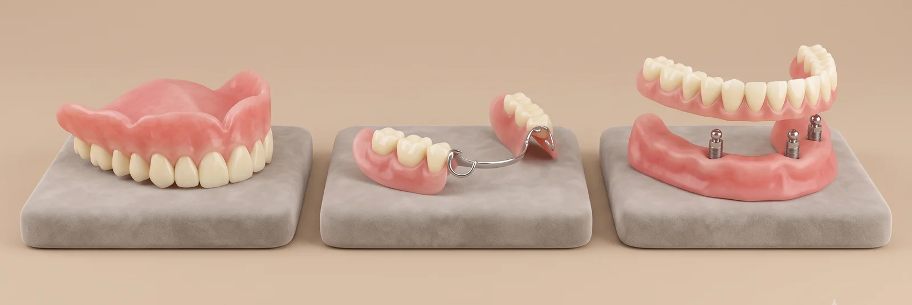

틀니(의치)란?
빠진 치아를 대신해 끼웠다 뺄 수 있게 만든 보철물입니다. 남은 치아가 있으면 부분틀니, 한 턱의 치아가 모두 없으면 완전틀니를 씁니다. 잇몸과 뼈 위에 얹히는 구조라, 본을 얼마나 정확히 뜨고 어떻게 조정하느냐가 착용감을 좌우합니다.
틀니의 세 가지 종류
- ·완전틀니 — 한 턱의 치아가 모두 없을 때. 잇몸 전체로 지지합니다
- ·부분틀니 — 남은 치아에 고리(클라스프)나 연결 장치를 걸어 고정합니다
- ·임플란트 틀니(오버덴처) — 임플란트 2~4개에 틀니를 끼워 고정. 빠지거나 흔들리는 문제가 크게 줄어듭니다
어떤 종류가 맞는지는 남은 치아 수, 잇몸뼈 양, 전신 건강, 그리고 임플란트 수술을 원하시는지에 따라 함께 정합니다.

뼈가 적어서, 연세가 많아서 임플란트를 포기하셨다면 — 틀니 대신 바로드림치과의 시니올 임플란트 → 도 함께 살펴보세요.
이런 불편이 있다면 점검이 필요합니다
- ·틀니가 헐거워 음식을 씹을 때 들뜬다
- ·틀니 아래 잇몸이 헐거나 아프다
- ·말할 때 틀니가 움직인다
- ·틀니를 한 지 5년 이상 됐다
- ·틀니를 잘 끼지 않게 되어 식사가 불편하다
잇몸뼈는 시간이 지나면서 서서히 줄어들기 때문에, 처음 잘 맞던 틀니도 몇 년 뒤엔 헐거워집니다. 이때는 속을 다시 채우는 이장(리라이닝)이나 새 제작으로 해결합니다.
건강보험 틀니
만 65세 이상은 완전틀니·부분틀니 모두 건강보험이 적용되며, 같은 턱 기준 7년에 한 번 제작할 수 있습니다. 보험 적용 여부와 본인부담률은 진료 당일 확인해 안내드립니다.
임플란트와 틀니, 무엇이 맞을까
씹는 힘과 안정성은 고정식 임플란트가 유리하지만, 수술 부담·치료 기간·비용을 고려하면 틀니나 임플란트 틀니가 맞는 분도 많습니다. 바로드림치과는 시니어 임플란트와 틀니를 모두 다루기 때문에, 한쪽으로 치우치지 않고 상태에 맞는 쪽을 권합니다.
Why Barodream
왜 바로드림치과의 틀니인가
원내 디지털 기공소
틀니 제작과 수리·조정을 원내에서 합니다. 수리가 급할 때 오래 기다리지 않습니다.
시니어 진료 경험
잇몸뼈가 적거나 전신 질환이 있는 어르신 진료를 많이 해 왔습니다. 틀니·임플란트 틀니·임플란트를 함께 놓고 상의합니다.
조정에 시간을 씁니다
처음 끼운 뒤 아픈 곳을 여러 번 다듬어 맞추는 과정이 착용감을 결정합니다. 이 과정을 생략하지 않습니다.
Process
진료 과정
상담 및 검진
남은 치아, 잇몸뼈, 기존 틀니 상태를 확인하고 종류를 함께 정합니다.
정밀 인상 채득
잇몸 모양을 정확히 본뜹니다. 필요하면 두 번에 나눠 뜹니다.
교합·시적
치아 배열과 물리는 높이를 입 안에서 확인하고 조정합니다.
제작 및 장착
원내 기공소에서 제작해 장착합니다.
조정과 관리
착용 후 아픈 곳을 조정하고, 정기 점검 시기를 안내합니다.
FAQ
자주 묻는 질문
틀니를 하면 바로 잘 씹을 수 있나요?+
처음 몇 주는 적응 기간이 필요합니다. 부드러운 음식부터 시작하고, 아픈 곳은 조정을 받으면서 서서히 익숙해집니다.
틀니는 얼마나 쓸 수 있나요?+
관리에 따라 다르지만 보통 5~7년 전후로 잇몸뼈 변화 때문에 조정이나 재제작이 필요해집니다. 건강보험도 7년 기준으로 설계돼 있습니다.
틀니를 끼고 자도 되나요?+
잇몸이 쉴 수 있도록 밤에는 빼고 물이나 세정액에 담가 두는 것을 권합니다. 끼고 자면 잇몸 염증과 구내염이 생기기 쉽습니다.
임플란트 틀니는 임플란트를 몇 개 심나요?+
아래턱은 보통 2개, 위턱은 4개 전후로 심고 그 위에 틀니를 끼웁니다. 뼈 상태에 따라 달라지며, 검진 후 정확히 안내드립니다.
헐거워진 틀니, 꼭 새로 해야 하나요?+
틀니 자체가 멀쩡하면 속을 다시 채우는 이장(리라이닝)으로 해결되는 경우가 많습니다. 금이 가거나 치아가 많이 닳았으면 새로 제작합니다.
Alternative
빠지지 않는 고정식을 원하시면,
임플란트도 함께 검토할 수 있습니다
잇몸뼈가 적거나 연세가 많아도 가능한 방법이 있습니다. 틀니와 임플란트를 같은 자리에서 비교해 드립니다.
Medical Team

"보이지 않는 정확함을 만듭니다."
김진희 대표원장
통합치의학과 전문의

"30년을 환자로 살았습니다."
한지상 대표원장
통합치의학과 전문의
"삐뚤어진 치아를 바르게 교정합니다."
석지원 교정원장
통합치의학과 전문의 · 치아교정